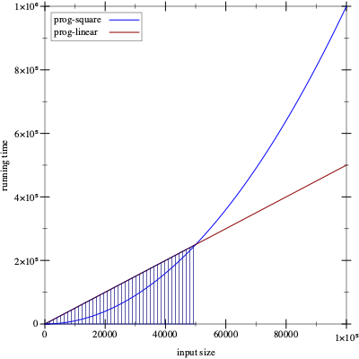
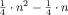
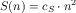
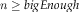
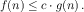
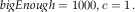
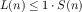
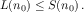
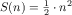
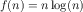

Intermezzo 5: The Cost of Computation
(check-expect (f 0) 0) (check-expect (f 1) 1) (check-expect (f 2) 8)
In the same spirit, timing the evaluation of a program application for
specific inputs tells you how long it takes to compute the answers for
those inputs—

How confident are you that you wish to use prog-linear instead of
prog-square? Consider the graph in figure 176. In this
graph, the x-axis records the size of the input—
This intermezzo introduces the idea of algorithmic analysis, which allows programmers to make general statements about a program’s performance and everyone else about the growth of a function. We thank Prabhakar Ragde for sharing his notes on connecting the first edition of this book with algorithmic analysis.Any serious programmer and scientist must eventually become thoroughly familiar with this notion. It is the basis for analyzing performance attributes of programs. To understand the idea properly, you will need to work through a text book.
Concrete Time, Abstract Time
(how-many some-non-empty-list) == (cond [(empty? some-non-empty-list) 0] [else (+ (how-many (rest some-non-empty-list)) 1)]) == (cond [#false 0] [else (+ (how-many (rest some-non-empty-list)) 1)]) == (cond [else (+ (how-many (rest some-non-empty-list)) 1)]) == (+ (how-many (rest some-non-empty-list)) 1)
(empty? some-non-empty-list)
Alternatively, if we assume that predicates and selectors take some fixed amount of time, the time it takes how-many to determine the length of a list depends on the number of recursive steps it takes. Somewhat more precisely, evaluating (how-many some-list) takes roughly n times some fixed amount where n is the length of the list or, equivalently, the number of times the program recurs.
Generalizing from this example suggests that the running time depends on the size of the input and that the number of recursive steps is a good estimate for the length of an evaluation sequence. For this reason, computer scientists discuss the abstract running time of a program as a relationship between the size of the input and the number of recursive steps in an evaluation.“Abstract” because the measure ignores the details of how much time primitive steps take. In our first example, the size of the input is the number of items on the list. Thus, a list of one item requires one recursive step, a list of two needs two steps, and for a list of n items, it’s n steps.
Computer scientists use the phrase a program f takes “on the order of n steps” to formulate a claim about the abstract running time of f. To use the phrase correctly, it must come with an explanation of n, for example, “it counts the number of items on the given list” or “it is the number of digits in the given number.” Without such an explanation, the original phrase is actually meaningless.
(define (contains-flatt? lo-names) (cond [(empty? lo-names) #false] [(cons? lo-names) (or (string=? (first lo-names) 'flatt) (contains-flatt? (rest lo-names)))]))
(contains-flatt? (list 'flatt 'robot 'ball 'game-boy 'pokemon))
(contains-flatt? (list 'robot 'ball 'game-boy 'pokemon 'flatt))
A best-case analysis focuses on the class of inputs for which the program can easily find the answer. In our running example, a list that starts with 'flatt is the best kind of input.
In turn, a worst-case analysis determines how badly a program performs for those inputs that stress it most. The contains-flatt? function exhibits its worst performance when 'flatt is at the end of the input list.
Finally, an average analysis starts from the ideas that programmers cannot assume that inputs are always of the best possible shape and that they must hope that the inputs are not of the worst possible shape. In many cases, they must estimate the average time a program takes. For example, contains-flatt? finds, on the average, 'flatt somewhere in the middle of the input list. Thus, if the latter consists of n items, the average running time of contains-flatt? is
 , that is, it
recurs half as often as there are items on the input.
, that is, it
recurs half as often as there are items on the input.
(sort (list 3 1 2)) == (insert 3 (sort (list 1 2))) == (insert 3 (insert 1 (sort (list 2)))) == (insert 3 (insert 1 (insert 2 (sort '())))) == (insert 3 (insert 1 (insert 2 '()))) == (insert 3 (insert 1 (list 2))) == (insert 3 (cons 2 (insert 1 '()))) == (insert 3 (list 2 1)) == (insert 3 (list 2 1)) == (list 3 2 1)
Inserting an item is similar to finding one, so it is not surprising that the performance of insert and contains-flatt? are alike. The applications of insert to a list of l items triggers between 0 and l recursive steps. On the average, we assume it requires l/2, which means that insert takes “on the order of l steps” where l is the length of the given list.

See exercise 486 for why this is the case.
We can also proceed with less formalism and rigor. Because sort
uses insert once per item on the list, we get an “order of
n” insert steps where n is the size of the
list. Since insert needs  steps, we now see that a
sorting process needs
steps, we now see that a
sorting process needs  steps or “on the order of
n2.”
steps or “on the order of
n2.”
(define (inf l) (cond [(empty? (rest l)) (first l)] [else (if (< (first l) (inf (rest l))) (first l) (inf (rest l)))]))
original expression
requires two evaluations of
(inf (list 3 2 1 0))
(inf (list 2 1 0))
(inf (list 2 1 0))
(inf (list 1 0))
(inf (list 1 0))
(inf (list 0))
Stop! If you paid close attention, you know that the above suggestion is
sloppy. The inf program really just needs  recursive steps for a list of n items. What is going on?
recursive steps for a list of n items. What is going on?
(define (infL l) (cond [(empty? (rest l)) (first l)] [else (local ((define s (infL (rest l)))) (if (< (first l) s) (first l) s))]))
Exercise 485. A number tree is either a number or a pair of number trees. Design sum-tree, which determines the sum of the numbers in a tree. What is its abstract running time? What is an acceptable measure of the size of such a tree? What is the worst possible shape of the tree? What’s the best possible shape?
The Definition of “On the Order Of”
The abstract measurement of performance is a relationship between two quantities: the size of the input and the number of recursive steps needed to determine the answer. The relationship is actually a mathematical function that maps one natural number (the size of the input) to another (the time needed).
Hence, a general statement about the performance of a program is a statement about a function, and a comparison of the performance of two programs calls for the comparison of two such functions.
Exercise 245 tackles a different question, namely, whether we can formulate a program that decides whether two other programs are equal. In this intermezzo, we are not writing a program; we are using plain mathematical arguments.

Say we figure out that cL = 1000 and cS = 1. Then we can tabulate these abstract running times to make the comparison concrete:
n
10
100
1000
2000
prog-square
100
10000
1000000
4000000
prog-linear
10000
100000
1000000
2000000
This last insight is the key to the precise definition of the phrase “order of.” If a function f on the natural numbers produces larger numbers than some function g for all natural numbers, then f is clearly larger than g. But what if this comparison fails for just a few inputs, say for 1000 or 1000000, and holds for all others? In that case, we would still like to say f is better than g. And this brings us to the following definition.
Definition Given a function g on the natural numbers, O(g) (pronounced: “big-O of g”) is a class of functions on natural numbers. A function f is a member of O(g) if there exist numbers c and bigEnough such thatfor all  it is true that 
Terminology If
, we say f is no worse than g.


Pick some specific n0 that satisfies the condition:
We use the symbolic name n0 so that we don’t make any specific assumptions about it. Now recall from algebra that you can multiply both sides of the inequality with the same positive factor, and the inequality still holds. We use n0:
At this point, it is time to observe that the left side of the inequality is just H(n0) and the right side is G(n0):
Since n0 is a generic number of the right kind, we have shown exactly what we wanted to show.

Finally, most people use O together with a short-hand for stating
functions. Thus they say how-many’s running time is
O(n)—
Stop! What does it mean to say that a function’s performance is O(1)?
Exercise 486. In the first subsection, we stated that the function f(n) = n2 + n belongs to the class O(n2). Determine the pair of numbers c and bigEnough that verify this claim.
Exercise 487. Consider the functions f(n) = 2n and g(n) = 1000 n. Show that g belongs to O(f), which means that f is, abstractly speaking, more (or at least equally) expensive than g. If the input size is guaranteed to be between 3 and 12, which function is better?
Exercise 488. Compare  and  . Does f belong to O(g) or g to O(f)?
. Does f belong to O(g) or g to O(f)?
Why Do Programs Use Predicates and Selectors?
; Number [List-of Number] -> Boolean ; is x in l (check-expect (search 0 '(3 2 1 0)) #true) (check-expect (search 4 '(3 2 1 0)) #false)
(define (searchL x l) (cond [(empty? l) #false] [else (or (= (first l) x) (searchL x (rest l)))]))
(define (searchS x l) (cond [(= (length l) 0) #false] [else (or (= (first l) x) (searchS x (rest l)))]))
The design of searchS fails to live up to the structural designIt really uses generative recursion. recipe. It instead takes inspiration from the idea that lists are containers that have a size. Hence, a program can check this size for 0, which is equivalent to checking for emptiness.
Although this idea is functionally correct, it makes the assumption that the cost of *SL-provided operations is a fixed constant. If length is more like how-many, however, searchS is going to be slower than searchL. Using our new terminology, searchL is using O(n) recursive steps while searchS needs O(n2) steps for a list of n items. In short, using arbitrary *SL operations to formulate conditions may shift performance from one class of functions to one that is much worse.
; N -> [List Number Number] ; how long do searchS and searchL take ; to look for n in (list 0 ... (- n 1)) (define (timing n) (local ((define long-list (build-list n (lambda (x) x)))) (list (time (searchS n long-list)) (time (searchL n long-list)))))
Stop! Conduct the experiment.
Assuming you have completed the experiment, you now know that length takes time proportionally to the size of the given list. The “S” in searchS stands for “squared” because its running time is O(n2). But don’t jump to the conclusion that thisSee Data Representations with Accumulators for how other languages track the size of a container. kind of reasoning holds for every programming language you will encounter. Many deal with containers differently than *SL. Understanding how this is done requires one more design concept, accumulators, the concern of the final part of this book.